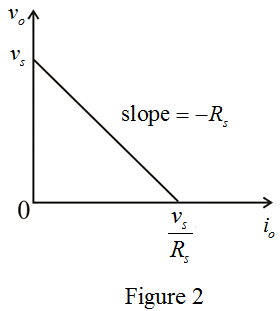

The two alternative representations of a signal source – The Thevenin form and the Norton form are shown in Figure 1.

The two alternative representations of a signal source – The Thevenin form and the Norton form are shown in Figure 1.
The current supplied by the source is  .
.
The voltage appearing between the output terminals is  .
.
From the Thevenin form of the signal source, the voltage appearing between the output terminals is,
From the Norton equivalent,
This is the form of equation of the straight line which has a slope of and the intercept on  axis is
axis is  and the intercept on the
and the intercept on the  axis is .
axis is .
The sketch of output voltage,  versus output current
versus output current  is shown in Figure 2.
is shown in Figure 2.
